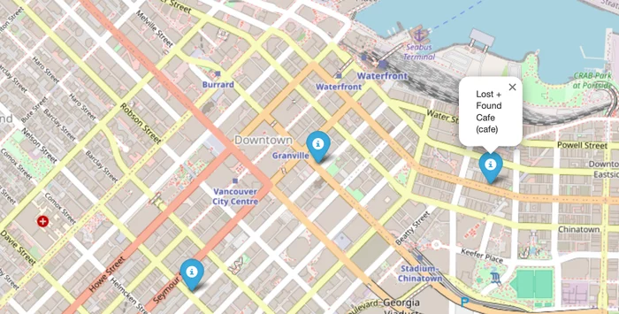
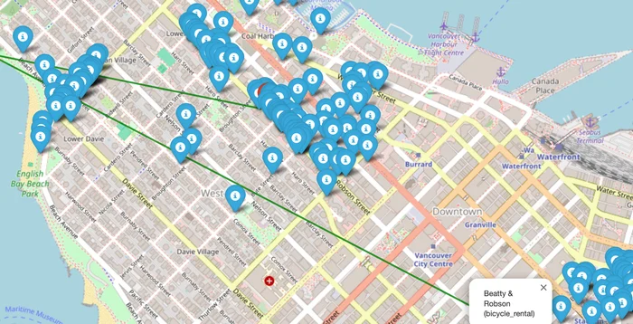

Vancouver Amenity Recommender
CMPT 353Type what you like, such as coffee or sushi, and it maps the closest Vancouver places that match. It can also read the GPS data in your photos and show what you walked past.
MY ROLEMatching and maps
TEAM3 people
WHENSpring 2025
Hardest problem
Matching what people type to OpenStreetMap tags. Plain text matching missed obvious hits, like "sushi" against a place tagged as a Japanese restaurant, so we compared sentence embeddings instead, then kept only places within the distance you set.


Python · Sentence Transformers · PyTorch · pandas · Folium